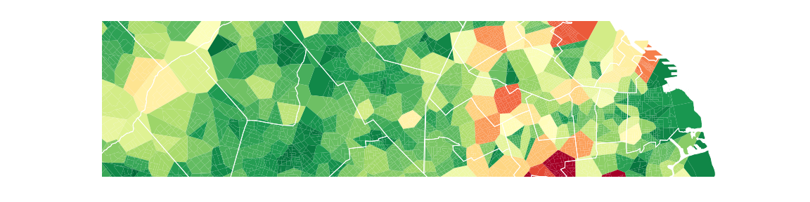

Mas operaciones con poligonos¶
En los tutoriales pasados vimos algunas de las operaciones basicas que se pueden hacer con objetos shapely.Polygon y shapely.Point en un objeto geopandas.GeoDataFrame. Ahora, vamos a usar algunas de estas operaciones para calcular algo un poco mas complejo.
Recordemos que tenemos una tabla con las escuelas del area metropolitana de Buenos Aires y su ubicacion. Ademas, tenemos informacion de donde vive la gente de cada edad, al nivel de radios censales, que son distritos censales de pocos cientos de personas. En particular podemos contar cuantos chicos de 13 a 18 anios viven en cada radio censal. Ademas podemos comparar la ubicacion de las escuelas con la distribucion de los chicos.
Les propongo considerar el siguiente modelo. Asumamos que:
- Los chicos estan ‘vinculados’ a la escuela secundaria publica mas cercana, midiendo en linea recta.
- La poblacion hacia adentro de cada radio censal esta repartida de forma uniforme. Es decir que si un radio censal tiene 25 chicos, el 50% de su superficie tiene 12.5 chicos.
es un modelo porque asumimos que se acerca a la realidad lo suficiente, aunque no esperamos tomar sus resultados exactos al pie de la letra. Tengamos en cuenta que los conteos del censo ni siquiera son exactos ya sea por problemas al momento de censar (como gente ausente, datos falsos o gente duplicada) o porque de todos modos el censo intenta medir la cantidad de gente y su ubicacion a la medianoche anterior a la encuesta, el 27 de octubre de 2010, y aunque hubieramos logrado medir con absoluta exactitud, a los ‘15 minutos’ los numeros ya habran fluctuado.
Volviendo al modelo, usemoslo para contar cuantos chicos se encuentran en la zona de vecindad de cada escuela. Es decir, para cada escuela, cuantos chicos se estima que la tengan como la mas cercana, sumando la poblacion de chicos en los radios censales incluidos en la zona de vecindad, y fraccionando aquellos radios censales que tienen a mas de una escuela como la mas cercana.
Parece complicado, pero esta operacion se puede hacer sin muchas vueltas aprovechando las funcionalidades de los GeoDataFrames de geopandas y los poligonos de shapely. Veamos como...
In [1]: import geopandas as gpd
# herramienta que vamos a usar
In [1]: from geopandas.tools import sjoin
#importamos los datasets
In [1]: voronoi = gpd.read_file('datos/voronoi_escuelas_secundarias_AMBA.shp')
In [1]: AMBA_datos_persona_13_18 = gpd.read_file('datos/AMBA_datos_persona_13_18.shp')
y ahora...
# Paso clave, calcula las intersecciones de poligonos en ambos datasets, todos contra todos.
# Con el argumento op se puede elegir la operacion a calcular, por ejemplo union, interseccion, diferencia...
In [1]: intersections= gpd.sjoin(voronoi, AMBA_datos_persona_13_18, how="right", op='intersects').reset_index()
In [1]: df = intersections.merge(voronoi.reset_index(), on = 'index_left')
# Elegir mejores nombres de columna
In [1]: df.rename(columns = {'index_right': 'index_radio', 'index_left': 'index_voronoi'}, inplace=True)
Vamos a calcular ahora, para todas las intersecciones la fraccion de area del redio censal que cae en cada zona de vecindad (Voronoi).
In [1]: df['intersect_portion'] = ""
In [1]: df['geometry'] = ""
#iteramos las filas del dataset de intersecciones.
In [1]: for i, row in df.iterrows():
...: df.set_value(i,'geometry', row['geometry_x'].intersection(row['geometry_y']))
...: df.set_value(i,'intersect_portion', row['geometry_x'].intersection(row['geometry_y']).area/(row['geometry_x'].area))
...:
# Construimos df_intersect multiplicando las fracciones de interseccion por la cantidad total de area, poblacion, etc.
In [1]: df_intersect = df[['index_voronoi','index_radio']].join(df[['varon','mujer','totalpobl','hogares','persona_13','area_km2']].apply(lambda col: col.mul(df['intersect_portion'])))
In [1]: df_intersect.set_index(['index_voronoi','index_radio'], inplace=True)
# Agregar un prefijo para identificar estas columnas.
In [1]: df_intersect = df_intersect.add_prefix('intersect_')
In [1]: df_intersect['geometry'] = df['geometry'].values
In [1]: df_intersect['intersect_portion'] = df['intersect_portion'].values
Ahora agregamos en cada vecindad de escuela la cantidad total de gente, y de paso agregamos el area para poder detectar si hay inconsistencias.
# Columnas que provienen de df_intersect
In [1]: inters_cols = [col for col in df_intersect.columns if 'intersect_' in col]
# Las columnas de data fraccional agregadas al nivel de vecindad de escuela.
In [1]: voronoi_aggregation = df_intersect[inters_cols].groupby( level=['index_voronoi']).sum()
# Renombramos las columnas
In [1]: voronoi_aggregation.columns = [u'voronoi_varon', u'voronoi_mujer', u'voronoi_totalpobl',
...: u'voronoi_hogares', u'voronoi_persona_13_18',
...: u'voronoi_area_km2']
...:
# Recuperamos la densidad de los radios. La podriamos traer del dataset original, pero si la agregamos asi podemos detectar posibles inconsistencias.
In [1]: densidad = df.groupby('index_radio')['densidad'].mean().to_frame()
# Nos quedamos con la data que nos va a servir para plotear.
In [1]: plot_data = df_intersect.join(voronoi_aggregation).join(densidad)[['geometry', 'voronoi_persona_13_18','densidad']]
# En formato GeoDataFrame
In [1]: plot_data = gpd.GeoDataFrame(plot_data)
Por ultimo vamos a ver que tal se ve lo que acabamos de calcular. Grafiquemos la cantidad de chicos que le corresponden a cada escuela, donde en verde ubicamos los valores mas bajos y en rojo los mas altos.
# Importamos la libreria standard para graficos.
In [1]: import matplotlib.pyplot as plt
In [1]: %matplotlib inline
# Cargamos la informacion de los limites de distritos en Provincia y Capital
# Tomamos el negativo, forma cabeza de hacer que los valores bajos se vean verdes y los altos rojos en el cmap 'RdYlGn'.
# Data de cantidad de chicos por poligono Voronoi
# Limites de partidos y comunas
# Limites del mapa